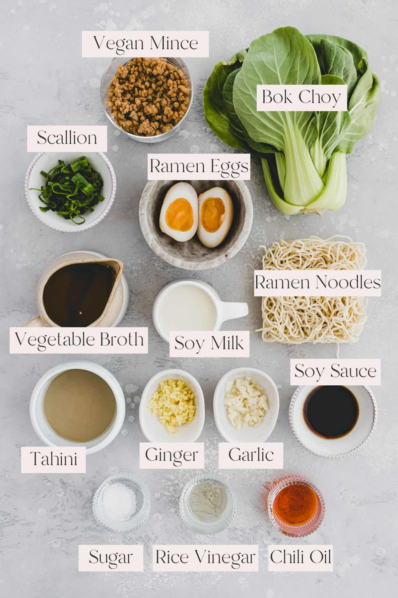

Recipes
Main Page
Ramen Recipe
Step By Step Instructions on Jordy's Ramen Recipe
- Noodles
- Vegan Vince
- Garlic
- Ginger
- Bok Choi
- Ramen Eggs
- Scallion
- Green Onion
- Tahini
- Vegetable Broth
- Rice Vinegar
- Sugar
- Chili Oil
- Soy Sauce

Sushi Recipe
Quick Sushi Recipe
- 1 ⅓ cups water
- ⅔ cup uncooked short-grain white rice
- 3 tablespoons rice vinegar
- 3 tablespoons white sugar
- 1 ½ teaspoons salt
- 4 sheets nori seaweed sheets
- ½ pound imitation crabmeat, flaked
- 1 avocado - peeled, pitted, and sliced
- ½ cucumber, peeled, cut into small strips
- 2 tablespoons pickled ginger